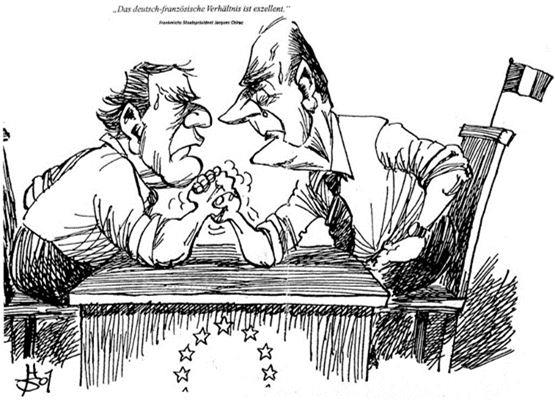
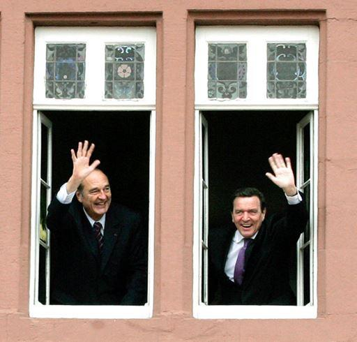
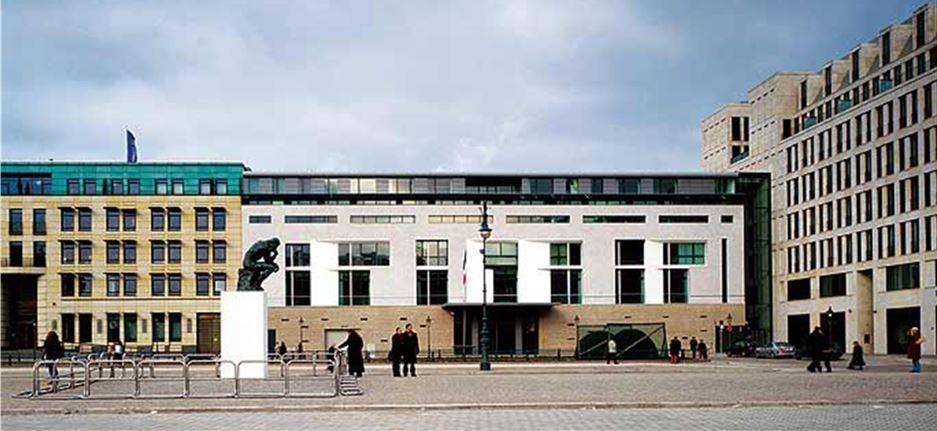

« Les Français vous souhaitent la bienvenue plus que jamais en tant qu'ami, ils vous accueillent en tant que frère ! »
Jacques Chirac, Président de la République Française
(Anniversaire du débarquement en Normandie juin 2004)
« Notre tâche est d’éveiller cet intérêt réciproque et de le renforcer. Il y a beaucoup de bonnes raisons d’être intrigué par l’autre, d’apprendre la langue du voisin et de faire sa connaissance, de faire connaître son pays et ses coutumes »
Gerhard Schröder, Chancelier de la République Fédérale d’Allemagne
(Assemblée Nationale, le 30 novembre 1999)
« Parmi les présidents de la Vème République, Jacques Chirac laissera la trace d’une carrière singulièrement riche en évènements de plus d’une quarantaine d’années de vie politique française. A l’occasion de sa disparition de nombreuses publications et témoignages verront le jour pour rappeler sa vie et sa destinée hors normes. Il restait, avec le président Giscard d’Estaing, un des derniers présidents d’une famille politique à avoir vécu « le gaullisme politique des années d’après-guerre ». Mais le sujet de ma chronique est d’aborder la présidence Chirac sous les auspices d’une époque où la politique européenne se décidait encore entre Paris et Berlin. Après de Gaulle-Adenauer, Giscard-Schmidt et enfin Kohl -Mitterrand… Il avait été considéré avec Gerhard Schröder comme la dernière personnification du « couple » franco-allemand. En effet, La coopération bilatérale a été, pour Jacques Chirac comme pour Gerhard Schröder l'un des rouages essentiels de l’avancée de la construction européenne. Reprenant l’héritage de leurs prédécesseurs et notamment celui du Général de Gaulle et de Konrad Adenauer, il se sont fortement appuyés sur la dynamique franco-allemande. La position commune prise par la France et l’Allemagne contre la guerre en Irak illustre bien cette entente entre les deux hommes qui désiraient le maintien d’un "monde multipolaire" et du multilatéralisme en matière de relations internationales. Après le départ de Schröder de la chancellerie en 2005, s’est éteinte cette étroite relation, qui permettait de surmonter les divergences et de dégager une position commune. Aussi j’ai décidé de me limiter mon propose cet « axe Chirac-Schröder » qui durera tout au long de la présence à la Chancellerie de Gerhard Schröder entre le 27 octobre 1998 et novembre 2005. J’ai néanmoins voulu volontairement terminer mon récit à l’année 2003 date officielle des grandes messes et sommets franco-allemand et le début de l’institutionnalisation des relations franco-allemandes, en conseil des ministres bilatéraux. »
1998
Pour Jacques Chirac le deuxième semestre de l’année 1998 se caractérise par le changement de majorité en Allemagne : comme un an plus tôt en France, c'est la "coalition rouge - verte" qui a remporté les élections générales du 27 septembre 1998. Gerhard Schröder devient le nouveau Chancelier fédéral, lui qui s'était prononcé pendant la campagne en faveur d'une "nouvelle impulsion" pour les relations franco-allemandes. Cette nouvelle nomination en Allemagne place ainsi sous le double signe de l'espoir d'une relance des relations bilatérales, et de « l'harmonie ». Cette « harmonie » se traduit, dans les faits, par un rapprochement des positions françaises et allemandes en matière de construction européenne, et par la poursuite des efforts pour mobiliser les sociétés civiles en matière bilatérale qui se traduit toutefois peut-être plus par une atmosphère plus détendue que par le développement de la concertation, que par des résultats tangibles -- sinon que Français et Allemands ont rapproché leurs visions sur un certain nombre de dossiers européens ou bilatéraux. Or, sans vision commune sur l'avenir de l'UE ou l'avenir de la relation franco-allemande, les réformes tarderont -- et, sur ces points, Français et Allemands n'ont guère progressé. Si la bonne entente entre les deux voisins est un signe positif pour la construction européenne, concrètement, ni un compromis sur l'Agenda 2000 ni des réformes pour renforcer la PESC n'ont été validés. Quant aux relations bilatérales, elles ont surtout consisté dans le suivi des initiatives lancées, soulignant les lenteurs et difficultés de leur mise en œuvre. Cette année paraît finalement assez peu marquante, d'autant qu'elle subit le contrecoup tant des progrès réalisés et de la place centrale de l'actualité européenne dans les relations franco-allemandes, quelques jours seulement après le sommet européen de Bruxelles.
1999
Les relations franco-allemandes vont connaître une période de turbulences ; aux espoirs de renouveau succède l'inquiétude d'un « découplage » entre les deux pays. Les désaccords sur la réforme de la PAC ou de l'Agenda 2000 se poursuivent, auxquels s'ajoutent la démission fracassante d'Oskar Lafontaine et l'orientation plus « libérale » de l'Allemagne -- confirmée par la publication d'un Papier « Blair – Schröder ». Amers, les Français ont le sentiment de ne plus être les partenaires privilégiés des Allemands.
L'Allemagne semble se détacher de la France et se rapproche de plus en plus de la Grande-Bretagne. Les dossiers européens sont d'ailleurs toujours au centre des préoccupations, l'Allemagne assurant la double présidence du Conseil et de l'UEO. Les deux pays ont néanmoins pu s'entendre pour promouvoir le renforcement de la PESC et de la Défense commune, et pour instituer une formule plus dynamique des rencontres franco-allemandes.
Pourtant, on dénote une amélioration de la coopération entre les deux pays en recentrant leurs activités sur quelques dossiers précis. Schröder et Chirac veulent aller plus loin – tant en termes d’objectifs à fixer que d’actions pour les mettre en œuvre. Leurs initiatives engagées dans le domaine de la formation professionnelle (domaine crucial étant donné les taux de chômage encore élevés dans les deux pays). vers l’harmonisation des politiques française et allemande dans ce secteur et, plus largement, dans leurs politiques de l’emploi un est progrès salué comme tel par les partenaires sociaux.
2000
Après une année difficile pour les relations bilatérales, mêlant craintes et espoirs, dissonances et progrès, Schröder– à qui l’on a pu reprocher de trop s’émanciper et de négliger son partenaire « privilégié » français – a le souhait de confirmer la bonne entente et l’efficacité qui caractérise la relation bilatérale. C’est en effet une année clef pour l’Europe, qui devra enfin adopter les réformes institutionnelles indispensables à son efficacité une fois l’élargissement commencé. Le sommet franco-allemand de Mayence redonne ainsi une bouffée d’oxygène. Certes, des problèmes demeurent et des efforts sont encore à faire : l’apprentissage de la langue du partenaire est beaucoup trop faible et diminue toujours ; les sociétés civiles doivent être impliquées davantage dans cette « relation particulière » ; et, comme l’a rappelé Jacques Chirac lors de la conférence de presse finale, les conflits pour la garde des enfants de couples franco-allemands divorcés constituent encore un « drame » non résolu. Les relations franco-allemandes ont toutefois fait la preuve de leurs capacités d’adaptation aux hommes et aux circonstances, pour peu que la volonté politique existe. Renouant avec la cordialité, les rencontres entre les Chirac et Schröder sont efficaces, tant sur les dossiers européens que bilatéraux. Ainsi, à l’issue d’un sommet qualifié « d’exceptionnel » par le Chancelier allemand, Jacques Chirac s’est réjoui de cette entente sans faille entre les deux pays. Les 26 et 27 juin suivant le Président Chirac est en visite d’État et prononce un discours fort remarqué sur l’avenir de la construction européenne devant le Bundestag à Berlin. La rencontre intervient à quelques semaines du sommet européen de Nice, qui clôture la présidence française de l’Union. Ce sommet voit donc les questions européennes se placer, comme six mois plus tôt, au cœur de ses priorités. en France les tensions liées à la Cohabitation contrastent avec le renforcement de la position du Chancelier Schröder, tant sur la scène nationale, qu’européenne et internationale : après des débuts difficiles et une série de revers électoraux, Schröder est parvenu à imposer ses vues et son pragmatisme, et à lancer l’Allemagne sur les chemins de la réforme. Les relations franco-allemandes s’en ressentent : les négociations, sur les questions européennes surtout, sont plus âpres pour la France, mais elles pourraient profiter aussi de cet élan qui porte Schröder, à vouloir renforcer les relations bilatérales. En dépit de la place importante occupée par les questions européennes, les dossiers bilatéraux n’en sont toutefois pas pour autant négligés. Au contraire, le Chancelier Schröder a tenu à rendre hommage à la coopération avec le Gouvernement Jospin et a exprimé son souhait de voir se poursuivre et s’améliorer les relations bilatérales, d’autant qu’elles avaient connu quelques difficultés en 1999. Il s’agit désormais de parvenir à un accord pour en reprendre le cours. Selon un sondage publié en juin 2000 par Die Zeit, plus de 80% des Allemands jugeaient les Français sympathiques ou très sympathiques, et plus d’un tiers d’entre eux se sentaient les plus proches des Français parmi les autres nations européennes (derrière l’Espagne ou l’Italie, mais devant l’Autriche).
Sans doute fallait-il y voir, en partie, un effet les bonnes relations entre les deux hommes. Les nombreuses entrevues avaient confirmé le climat particulier, privilégié, établi entre eux. Quoique l’on veuille bien croire, les relations franco-allemandes relèvent des rapports non seulement de la politique « extérieure » et du climat intérieur de chaque pays ou sur le déroulement des rencontres interministérielles – bon ou mauvais – mais des liens personnels noués par les exécutifs des deux pays et qui influent de façon notable sur l’entente franco-allemande. Les dossiers traités en « parfaite confiance » entre les deux hommes ont permis de transcender les différences de culture ou les difficultés « techniques », et à rapprocher les deux sociétés.
2001
C’est le Sommet de l’après Nice qui est dominé par les différends franco-allemands au sujet de la pondération des voix au Conseil et n’a finalement pas résolu les importantes questions concernant la future forme institutionnelle de l'Union que le Ministre des affaires étrangères Hubert Védrine déclare quelques mois auparavant lors d’une émission sur la chaîne parlementaire « nous pouvons bien relancer les relations franco-allemandes et toutes les autres parce que cette négociation difficile est terminée » Confronté à l’inquiétude grandissante au sein des partenaires de l’UE sur l’avenir du couple franco-allemand, Schröder et le Président Chirac décident 31 janvier 2001, lors d'une rencontre à Blaesheim en Alsace, d'intensifier les consultations franco-allemandes par des rencontres informelles des chefs d'État et de gouvernement en compagnie des Ministres des Affaires étrangères.
Il s’agit de s’entretenir dans un « contexte conviviale » sur les questions européennes et bilatérales. Les « rencontres de Blaesheim » feront désormais parties du calendrier franco-allemand et ont lieu à intervalles de 6 à 8 semaines. C’est dans une ambiance lourde après les attentats du 11 septembre Ces attentats ont été vécus presque en temps réel par des centaines de millions de téléspectateurs. La surprise et le choc psychologique ont été considérables au sein des populations américaines et occidentales.
Ce qui a vu le chancelier allemand Gerhard Schröder déclarer : « Ce n'est pas là une bataille entre les civilisations, c'est une bataille pour la civilisation ». Jacques Chirac fut le premier chef d'État à se rendre sur le site de Ground Zero pour rendre hommage aux victimes quelques jours après ces tragiques attentats. La fin de l'année 2001 était une période annoncée par plusieurs sociétés de biotechnologies comme une échéance pour aboutir à des résultats probants sur le « clonage d'embryons humains ». Les deux pays ont voulu se réunir afin de pouvoir débattre et présenter une position commune pour l’interdiction du clonage humain. Jacques Chirac, s’était exprimé sur la question dans un discours à Lyon le 8 février 2001 où il a fait connaître son opposition au clonage. Du côté allemand la première question dont a été saisi le Comité national d’éthique allemand mis en place en mai 2001 par le Chancelier Schröder a été celle de l’importation de cellules souches embryonnaires. Pour la première fois les comités nationaux d’éthique des deux pays se sont réunis en formation restreinte et on institutionnalisé leurs échanges afin d’enrichir leur réflexion commune sur un sujet qui touche comme celle des cellules souches l’humanité entière. Quelques semaines plus tard, le 20 décembre 2001, dans son avis sur l'importation de cellules souches embryonnaires humaines le comité national allemand se prononçait en faveur de l’importation à des fins de recherche de cellules souches embryonnaires sous des conditions définies, valables pour la recherche publique et privée.
2002
La relation franco-allemande est à la recherche d’un second souffle. C’est sur fond de divergences entre les deux pays, apparues sur le rôle futur du président du Conseil européen et sur celui de la Commission ainsi que sur la réforme de la politique agricole commune qu’une semaine, avant la tenue de ses consultations que Dominique de Villepin, Ministre des Affaires étrangères, est auditionné devant la Commission des Affaires étrangères de l'Assemblée nationale à Paris. Édouard Balladur, Président de la Commission veut profiter de cette occasion pour parler de la relation franco-allemande. Cette audition permet d’avoir le sentiment du chef de la diplomatie française sur l’avenir des relations bilatérales. Les deux chefs d’États ont décidé de confier aux deux ministres des Affaires étrangères, Joschka Fischer et Dominique de Villepin, la mission de préparation de la déclaration commune du 22 janvier 2003 à l’occasion du 40ème anniversaire du traité de l’Élysée qui donnera une nouvelle vision des relations bilatérales. C’est dans une ambiance proprement chaleureuse dans son contexte, et par la température ambiante, que fut réaliser ce sommet. À cette occasion les autorités Françaises et allemandes ont réuni de nombreuses personnalités de l’espace audiovisuelle en groupes de travail afin de réfléchir à la façon de mieux coordonner les politiques de coopération dans le domaine de la communication de la formation des journalistes bilingue. Vecteur privilégié pour l’apprentissage de la langue, problème récurrent le manque d’intérêt pour la langue du partenaire. C’est le dernier Sommet en tant que tel, en effet à l’occasion du 40ème anniversaire eu Traité de l’Élysée qui se fera en grande pompe l’année suivante sera le point de départ d’un certain nombre de bouleversements dans l’organisation des consultations franco-allemandes.
2003
Réparties sur deux jours cette commémoration devait démontrer l’inaltérable amitié auprès de nos concitoyens mais également auprès des autres Nations que ce Traité a permis à deux ennemis de reconstruire et d’évoluer vers une coopération amicale. Les rédactions journalistiques du monde entier couvrir l’évènement de façon importante. En effet la réunion du Conseil des ministres communs à Paris, session commune au Bundestag et de l’Assemblée nationale à Versailles, l’inauguration de la stèle de Gaulle Adenauer dans les jardins de la Konrad Adenauer Stiftung à Berlin ainsi que l’inauguration de la nouvelle Ambassade de France au Pariser Platz ont donnent lieu à de très nombreux articles, conférences et émissions télévisées.
Le dernier sommet semblait montrer un renouveau d'attention des gouvernements pour le bilatéral et le rapprochement des sociétés civiles. Dans leur déclaration commune à l’occasion du 40ème anniversaire du Traité de l’Élysée, Chirac et Schröder rappellent que leur volonté d’approfondir la coopération franco-allemande se place au service de la construction européenne, en faveur de laquelle ils s’engagent et souhaitent jouer un rôle moteur. Toute avancée ou approfondissement dans la relation bilatérale devait s’inscrire dans une perspective européenne, ouverte aux autres partenaires. Dans une Union Européenne à 27 États-membres, l’accord entre la France et l’Allemagne est un facteur indispensable, même s’il n’est pas suffisant, à la formation d’un consensus et à la poursuite de la construction européenne. Partant de ce constat, les deux hommes d’État ont veillé à jouer pleinement leur rôle dans nombre de sujets importants, tant sur le plan des politiques internes, que sur l’élargissement et les relations extérieures de l’UE. Les sommets furent désormais remplacés par des conseils des ministres communs. Le 22 janvier devient dans les deux pays la journée de l’amitié franco-allemande. Beaucoup d’espoir a été mis dans le contenu de la déclaration commune à l’occasion du 40ème anniversaire du traité de l’Élysée, ainsi qu’à l’occasion, quelques mois plus tard, des rencontres à Poitiers, les 27 et 28 octobre 2003 initiés par le premier Ministre Jean Pierre Raffarin. Aussi fallait-il saluer avec optimisme la prise de conscience, par Jacques Chirac et Gerhard Schröder du rôle des sociétés civiles dans la consolidation du rapprochement franco-allemand, de même que les initiatives – quoique tardives – décidées par les deux États pour faire rentrer le franco-allemand dans la vie quotidienne de leurs citoyens. A ce titre, Joseph Rovan ou Jacques Delors avaient déjà en leur temps souligné l’intérêt qu’il y aurait à établir des structures bilatérales de concertation permanentes sur les dossiers délicats – ou de mieux utiliser ceux qui existent déjà, dans les domaines économiques, militaires ou culturels.
Conclusion
L’enseignement majeur à tirer des rencontres Chirac Schröder entre 1998 à 2003, reste que la coopération était suffisamment souple pour s’adapter aux nouvelles circonstances, aux nouvelles priorités des relations franco-allemandes, et que les difficultés, une fois cernées, pouvaient devenir une source d’énergie pour rebondir et mieux les affronter. Le fait d’y associer tous les acteurs de la société franco-allemande était le garant d’une veille attentive et de critiques constructives qui intéressaient l’ensemble des individus. Elles s’inscrivaient dans une dynamique de reculs et d’avancées successives. Que l’entente se dégrade, que les retards s’accumulent, et un sursaut de volontarisme des hommes – dans l’intérêt de leur pays ou par conviction personnelle – permettaient à un nouvel élan de s’imprimer, pour poursuivre l’œuvre du rapprochement entre les deux pays, ou faire avancer l’intégration européenne lorsque celle-ci s’approchait de la stagnation.
On peut affirmer que Jacques Chirac et Gerhard Schröder ont permis, dans l’ensemble, un rapprochement effectif et efficace du point de vue institutionnel. Ils ont davantage insisté sur l’éducation et la culture, mais aussi sur les difficultés quotidiennes des citoyens des deux côtés du Rhin : environnement ; divorces des couples binationaux ; chômage ; montée du racisme et de l’extrême droite, etc.
Mais ils ont surtout été également l’occasion de rapprocher les acteurs institutionnels avec leurs populations. Il suffit de se souvenir du dernier sommet Schwerin puis les célébrations du 22 janvier 2003 pour constater l’intérêt que portaient de part et d’autre du Rhin les sociétés civiles. Avec le recul nécessaire, force est de constater qu’aujourd’hui et depuis la fin de ce « tandem » franco-allemand, il est difficile de conclure sur une note encourageante pour l’avenir. On l’aura noté, plus que jamais il reste beaucoup à faire : à progresser là où les résultats tardent ; à relever les défis des dossiers encore trop négligés (environnement, criminalité, réfugiés, sécurité des produits alimentaires…) ; à retrouver « le souffle et l’élan fondateur » que Jacques Chirac appelait de ses vœux en juin 2000 ; et à profiter de la liberté de ton qui caractérise généralement le dialogue franco-allemand pour aller plus loin vers une Europe unie, autour d’un noyau franco-allemand qui fait sens par lui-même.
Partager cette page